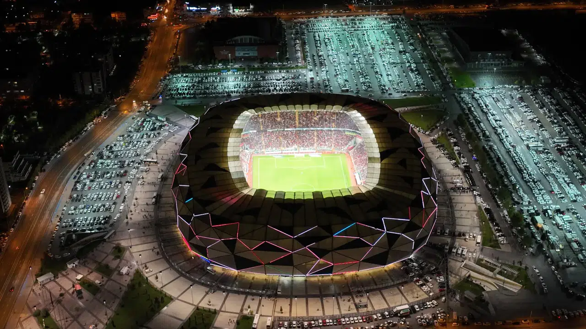
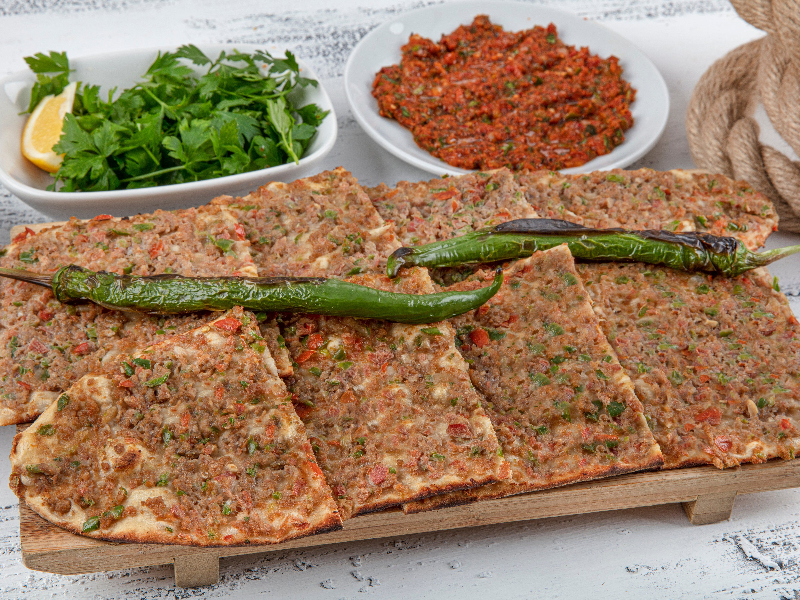
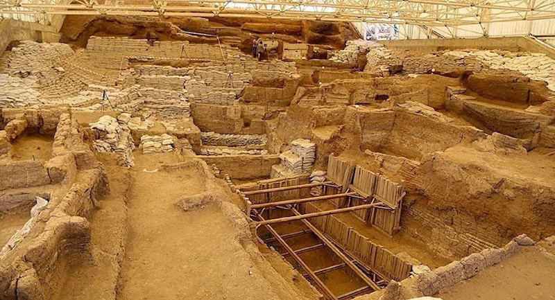

Konya
Doğup büyüdüğüm, lise hayatımın sonuna kadar yaşadığım ailemi ve arkadaşlarımı arkamda bıraktığım şehir.
Konya Hakkında
Çatalhöyük
Konya denilince akla gelen ilk durak, insanlık tarihine ışık tutan Çatalhöyük’tür. UNESCO Dünya Miras Listesi’nde yer alan bu yerleşim, yaklaşık 9.500 yıl öncesine dayanan geçmişiyle dünyanın en eski yerleşik toplumlarından biri olarak kabul edilir.
Mevlana
Şehrin manevi mimarı ise şüphesiz Hz. Mevlâna’dır. 13. yüzyılda Konya’yı merkez edinen Mevlâna Celâleddîn-i Rûmî, "Ne olursan ol yine gel" felsefesiyle şehri tüm dünyadan ziyaretçilerin akın ettiği bir inanç ve huzur merkezi haline getirmiştir. Yeşil Kubbe altındaki Mevlâna Müzesi, şehrin en ikonik yapısıdır.
Konyaspor
Modern Konya'nın en önemli simgelerinden biri de Konyaspor’dur. 1922 yılında kurulan ve "Anadolu Kartalı" olarak anılan kulüp, şehrin sosyal hayatında büyük bir yere sahiptir. Maçlarını Türkiye’nin en modern statlarından biri olan Konya Büyükşehir Belediye Stadyumu’nda oynayan ekip, yeşil-beyaz renkleriyle şehrin birleştirici gücüdür.
Muftak
Tarihi kadar mutfağıyla da ünlü olan Konya’da, Etli Ekmek, Fırın Kebabı ve Bamya Çorbası denemeden geçilmemesi gereken lezzetlerin başında gelir.

Mevlana Müzesi

Büyükşehir Belediye Stadyumu

Etli ekmek

Çatalhöyük